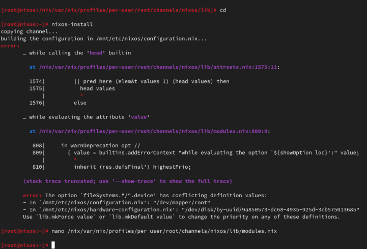
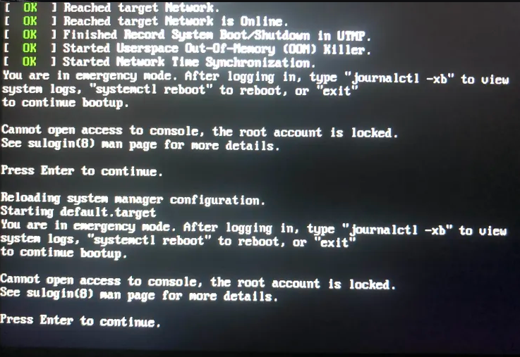

For anyone reading this article now, you might be wondering why I chose such a title. Have you ever seen someone who is very skilled in programming but struggles to perform tasks or command on their machine without using a graphical interface? Have you ever realized how important system administration skills are in the field of computer science?
Let’s say for example, John is a programmer who lacks sysadmin skills. He has been assigned to a project that is due within a day when he suddenly encounters an error because his project requires a specific library that isn’t available on his machine but he knows he has that library and the only way to fix the issue is to use his terminal.
There are several things that could happen to John: He might not deliver the project to his boss within the day because he is too focused on fixing his library instead of writing code; He could potentially break his entire system due to impatience and negligence; and John might receive a notice that someone will replace him already.
That was my realization after finishing the installation and exploring everything inside of NixOS, which requires a thorough understanding and bond with your machine. In several sections, I will show you how I manually executed the switch from Ubuntu to NixOS.
I have been using Ubuntu Linux
distribution with a span of 8 months and someone introduced me to
another distribution called NixOS, so I thought I would
give it a brave transition. He said that it is
declarative, meaning that the entire system state can
be define in a single .nix file; and
reproducible, meaning you can replicate the exact same
system configuration and environment on multiple machines or at
different times. I don’t know Nix best hacks yet and I am still learning
everything through their NixOS
manual.
Here are my guide setup from Rommel Martinez:
NOTE: Read before you act.
The first thing is to have the installer on this link: nixos.org/download.
I used Rufus to make the USB drive a boothable one. During the process of creating a bootable USB with your ISO image, you have to make sure what boot firmware you have in your system. When choosing the partition scheme and target system type:
Under “Partition scheme,” select “GPT” and under “Target system,” select “UEFI (non-CSM).”
Under “Partition scheme,” select “MBR” and under “Target system,” select “BIOS or UEFI”.
Once the bootable device is ready, reboot the system in able to boot into the NixOS installer. If you installed an ISO that supports grahical interface you can open a terminal inside it and you will be logged in automatically as root.
# nmcli d wifi list
# nmcli d wifi connect [router_name] password [router_password]
Note: Inside of “[ ]” represents your router’s name and password, do not use “[” or “]” during the execution.
# gdisk /dev/nvme0n1
Note: You should know what drive you are going
to use in creating the partitions. You can use command like lsblk in able to display block devices such as
hard drives, solid-state drives, and other storage-related devices.
During my installation I got confused what I am going to use. Instead
understanding what it is, I continuously executing their used commands
so please remember there are parts here that you have to
replace.
Here what you can do inside gdisk, it
is a command on Linux to create, manage, and delete standard
partitions.
# gdisk /dev/nvme0n 1 #GPT partitioning
> ? # list all commands
> p # list all partitions
> d # delete a partition
> o # create a new empty GPT partition table
> Y # validate new empty GPT (⚠️ delete all pre-existing partitions)
> n # create a new partition (boot partition)
> RET # enter to leave default part number (1 for nvme0n1p1)
> RET # enter to leave default first sector
> +512Mib # specify a 512Mo partition size
> EF00 # specify an EFI System boot partition type
> n # create new partition (optional swap)
> RET # enter to leave default part number (2 for nvme0n1p2)
> RET # enter to leave default first sector
> RET # enter for the rest of a partition size
> 8E00 # specify a Linux LVM
> p # print the table to ensure that it is correct
> w # write the table, validate all previous actions and quit
> Y # validate new table
NOTE: this commands will essentially wiping your disk so triple check what drive you are actually using in modifying the partitions.
# mkfs.vfat -F 32 /dev/nvme0n1p1
# pvcreate /dev/nvme0n1p2
# vgcreate vg /dev/nvme0n1p2
# lvcreate -L 20G -n swap vg
# lvcreate -l 100%FREE -n root vg
# cryptsetup luksFormat /dev/vg/root
# cryptsetup luksOpen /dev/vg/root root
# mkfs.ext4 -j -L root /dev/mapper/root
# mkswap -L swap /dev/vg/swap
# mount /dev/mapper/root /mnt
# mkdir /mnt/boot
# mount /dev/nvme0n1p1 /mnt/boot
# swapon /dev/vg/swap
As you can see above, Basically I manually created GPT partitions, volumes, and encrypted my disk. Now, this is the time to install the NixOS on the top of it.
# nixos-generate-config --root /mnt
You may see this link under the install to disk of ebzzry's
article—A Gentle
Introduction to the Nix Family because I followed his own
configuration for my first crack of NixOS system environment. Remember,
there are parts there that you have to replace. To save the edited
configuration file, just pressed Ctrl + o and then press RET
to save the file. If you wish to leave to the editor, press
Ctrl + x.
# nixos-install
If there are errors, you can be able to go back on the configuration file and edit it again. Otherwise, reboot the system.
# reboot
The next several section will be the behind the scene errors and how I overcome them during my installation process and how I restore everything I need inside NixOS.
These are the errors I experienced during the installation of NixOS.

Solution:
fileSystems = {
"/boot" = {
device = "/dev/disk/by-uuid/my_blkid";
fsType = "vfat";
};
"/" = lib.mkForce {
device = "/dev/mapper/root";
fsType = "ext4";
};
};lib.mkForce function ensures that the root filesystem configuration ("/") is applied even if other configurations might conflict or override it. This is particularly useful in situations where the root filesystem configuration needs to be explicitly set and maintained despite of any other potential conflicts.

While I was already inside NixOS, I accidentally deleted an important directory in my root account due to bad assumption. You might be wondering how I resolved this. Yes, I came back from scratch because I can't use a terminal on the live environment because my root account is locked, So I need to go on the live installation again when my boothable USB was already corrupted that time and I don't have an extra one. Do you know now why article title is like that?.
NixOS has a collection of packages called Nixpkgs. The collection contains over 100,000 software packages that can be installed with the Nix package manager. Some users have their own package management, The first basic packagement I used is nix-env this command is used to manage Nix user environments. Click To know more about nix-env.
When I am already restoring everything I need, I use channel to install them rather than using Git checkout. It is much more convenient, and the commands are too easy to execute. Channels are URLs that point to repositories. By subscribing to a channel, you can get access to the packages.
The nixos-unstable and nixpkgs-unstable channels serve different purposes. If you use nixos-unstable, you’ll get the latest updates to the core NixOS system. It's great for staying on the cutting edge of NixOS features. On the other hand, nixpkgs-unstable provides the latest versions of software packages, libraries, and tools, so you can access the newest applications and updates without waiting for the stable release.
To add a channel:
nix-channel --add https://nixos.org/channel/nixos-unstable nixos
nix-channel --add https://nixos.org/channels/nixpkgs-unstable nixpkgsTo list the channels:
# nix-channel --list
nixos https://nixos.org/channels/nixos-unstable
nixpkgs https://nixos.org/channels/nixpkgs-unstableTo install a package:
# nix-env -iA nixpkgs.my_desired_packageTo list the packages:
# nix-env -qTo enable the nix command in NixOS, copy and paste this snippet into your root NixOS configuration.
nix.settings.experimental-features = [ "nix-command" "flakes" ];
After your NixOS rebuild, make sure to test some main-commands like executing nix repl to make sure that it works.
In my current user environment I am using a nix experimental commands to install such packages. To install a package:*
# nix profile install nixpkgs#my_desired_packageTo locate or search packages: These two experimental commands will give you the name of the package that you need.
# nix-locate desired_package
# nix search nixpkgs desired_packageAs you can see in my experimental features, I also have the flakes input enabled. Flakes are a new addition to the Nix ecosystem, It is designed to enhance the reproducibility and shareability of package management, development environments, and system configurations. In simple terms, Nix flakes provide a method for organizing and managing Nix-based projects. A "flake" is essentially a self-contained package or configuration that includes all the dependencies and setup needed to build or run a project. This approach simplifies the sharing and usage of Nix expressions—code that define how to build packages, systems, environments, and more—across different machines, for consistencies.
A flake.nix file is a central file defining the flake, which contains all the dependencies, configuration, and settings necessary to build or configure the flake. It specifies some metadata about the flake called Inputs, these are the dependencies of the flake, often other flakes, Nixpkgs, or external sources that the flake depends on and Outputs are the values of building or configuring the flake.
Flakes make sure that what you build on one machine will be identical on another, down to the last detail. It also supports collaboration where sharing and reusing Nix-based code becomes much easier since flakes explicitly define their dependencies or outputs and lastly self-contained, a flake is a complete, portable unit of Nix code, meaning it can be versioned, pinned, and shared in a very predictable way.
Since I am not that familiar on Nix expressions syntax yet. I am going to give you an example provided from the manual.
To build a flake just follow the snippet below:
> nix flake new hello > cd hello > nix build > nix run Hello, world!
The first one is a way to create you a flake.nix file into a
directory named hello, a flake is a
filesystem tree that contains a file named flake.nix in your root directory, second is to
change directory from your root directory to hello directory, The third
one is build the default package from the flake and run to see the
output. Additionally, flakes.lock file
that you'll see on the directory helps you ensure that running the
project at different times or on different machines will produce the
same results, as long as the lock file is used.
When you open the flake.nix file this is what it looks like:
{
description = "A very basic flake";
inputs = {
nixpkgs.url = "github:nixos/nixpkgs?ref=nixos-unstable";
};
outputs = { self, nixpkgs }: {
packages.x86_64-linux.hello = nixpkgs.legacyPackages.x86_64-linux.hello;
packages.x86_64-linux.default = self.packages.x86_64-linux.hello;
};
}
If you wish to know more about introduction of Nix Family you may go on this article—A Gentle Introduction to the Nix Family by ebzzry. Without his support, I won’t have my NixOS on my machine. Thanks to my cousin Jasther who let me use his computer to gather information about NixOS, and Roj who helped me to revive my corrupted boothable USB using Hiren's BootCD because of my negligence.